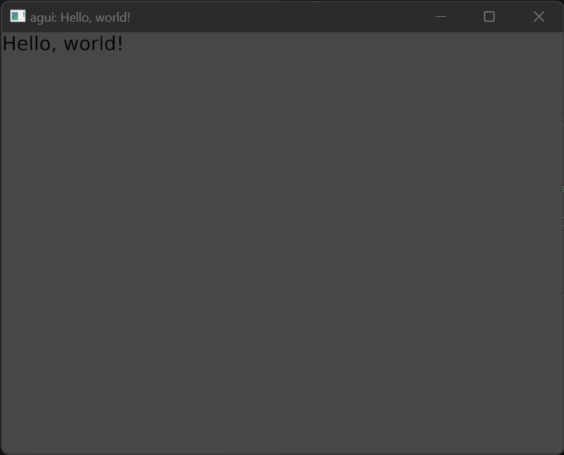

Introduction
Agui is a reactive UI library, built in pure Rust, made for pure Rust. It's inspired by Flutter and other reactive UI libraries, and almost more importantly: it's renderer-agnostic. There are a few basic concepts to learn, but if you come from a background of Flutter, React, Vue, or other similar libraries, you'll feel right at home.
Stability Warning
While the core of Agui is mostly stable, it is still very much in its infancy. The API may change, and optimizations still need to be done, especially when it comes to talking to the render integrations, and the integrations themselves. We are still finding our way, and that will take time. That said: it works. If you need a feature that doesn't exist, feel free to contribute or make a plugin!
Contributing
Agui is free and open source. You can find the source code on GitHub, issues can be posted on the GitHub issue tracker, with feature requests and questions directed to Github discussions.
Getting Started
Installation
agui is available on crates.io, Rust's official package repository. Just add this to your Cargo.toml file:
[dependencies]
agui = "0.3" # ensure this is the latest version
Hello, world!
First, you need to select your integration. To get started quickly, we're going to run with agui_agpu since it's the most feature complete. agpu is an abstraction over wgpu to make it easier to use, so it's effectively a wgpu integration.
The smallest program you can start up to render something can be found in agui_agpu/examples/hello_world.rs:
fn main() -> Result<(), agpu::BoxError> {
let program = agpu::GpuProgram::builder("agui: Hello, world!")
// The integration requires a few GPU features to be enabled
.with_gpu_features(
Features::TEXTURE_ADAPTER_SPECIFIC_FORMAT_FEATURES
| Features::VERTEX_WRITABLE_STORAGE,
)
.build()?;
// Create a UI with the default render passes
let mut ui = UI::with_default(&program);
// Import a font so we can render text
let deja_vu_sans = ui.load_font_bytes(include_bytes!("./fonts/DejaVuSans.ttf"));
// Set the root node of the UI
ui.set_root(build! {
App {
child: Text::is(deja_vu_sans, 32.0, "Hello, world!".into())
}
});
// Start the update loop
ui.run(program)
}
There's a little initial setup to create the GpuProgram and UI, most of what we care about is loading the font and ui.set_root. The build! macro will be explained soon. How fonts work will be explained a bit futher in a later section.
With the above code, you should be left with something like this:

Truly remarkable.
Yeah, it's not much to look at, but we'll build on this in future sections to make more elaborate (and reactive!) interfaces.
Basics
If you come from a background of Flutter or React/Vue, most of this should be familiar to you. However, I'll explain for those that have never heard of them.
User interfaces are inheritly complex and must be orchestrated properly to keep the visuals in line with the actual state of the program. Generally, this is a complex problem, and many issues can (and will) occur if you leave this "refreshing" up to the actual logic of your code. What a reactive UI library does is abstract your interface a bit to provide automatic updates to it whenever your state changes, ensuring your visuals and your state are always in sync.
However, with this ~magic~ comes additional considerations to your code. When state changes, all widgets listening to that state are updated in the UI tree. This means that you need to put some thought into limiting these rebuilds to as small of a piece of the tree as you can manage. While agui manages to reduce rebuilds where it can, it's not a magic bullet; we forgo tree-diffing for performance reasons, and to prevent problematic edge cases.
Hopefully that wasn't too much jargon for you. Just in case, here's a tl;dr: UIs are complex, use agui to make them less of a pain to handle.
Glossary
- Widget: A user interface is built on Widgets, which can be anything from pure data, to managers, to elements drawn on screen.
aguimakes little distinction between them. - Layout:
aguileverages morphorm for its layout system, which itself is modeled after the subform layout system. - State: At its core,
aguiis a state manager. It takes in your application state, and manages its lifecycle end-to-end, listening for changes and updating your widgets as necessary. - Global: A global is state that exists as a singleton within your application. All widgets will read and write the same data.
- Plugin: A plugin is essentially a singleton widget that does not exist in the tree. They are often used to manage a global state that other widgets may listen to.
- Computed Functions: A function returns a value, only causing updates to the widget if the returned value changes.
- Key: A key is a way to instruct
aguito cache a widget between rebuilds.
Macros
Before we get too much further, you must understand some of the macros we'll be using in this guide. There are two main ones that agui provides.
The build! macro
This is a convenience macro. It's not technically required (in fact it's quite easy to never use it) but it makes our life a bit easier. In exchange for some black-box magic, you get better maintainability and better looking code.
// Before:
fn build(&self, ctx: &WidgetContext) -> BuildResult {
BuildResult::One(
Button {
child: Drawable {
layout: Layout {
sizing: Sizing::Set { width: 64.0, height 32.0 },
..Layout::default()
}.into(),
..Drawable::default()
},
..Button::default()
}.into()
)
}
// After:
fn build(&self, ctx: &WidgetContext) -> BuildResult {
build!{
Button {
child: Drawable {
layout: Layout {
sizing: Sizing::Set { width: 64.0, height 32.0 }
}
}
}
}
}
Doesn't that look nice? Essentially all it is doing is adding .into() to your blocks and adding Default::default() to your structs. Note that it does make many assumptions, notably that every struct will #[derive(Default)].
#[functional_widget]
The vast majority of widgets are simple fields followed by a single build() function. This means we have room for simplification: why not just make our function our widget? Well alright then. Ask and ye shall receive.
#[functional_widget]
// The macro will turn `snake_case` into `PascalCase` for the widget name
fn example_widget(ctx: &WidgetContext, layout: Ref<Layout>, child: WidgetRef) -> BuildResult {
ctx.set_layout(layout);
build!{
Button {
child: child
}
}
}
See? Instead of establishing a struct called ExampleWidget with the fields of layout and child, we can just make a function and tag it with the macro. The ctx: &WidgetContext parameter is required, and any following arguments are added as a struct field. Of course, all of this comes with assumptions and potential overhead. Any field used here must implement Default + Clone in some form or another, so that the widget may call the example_widget function without issue.
Widgets
A widget is anything that exists in the UI tree. It could be a visual element, a management system, or just plain-ol-data. You can find a full list of them in the Widget Reference.
Primitives
agui comes with a set of extremely simple widgets that are referred to as Primitives. These generally cover the most basic renderable ~things~ or other extremely useful widgets that don't offer much opinionated functionality, but are still very useful. Render integrations hook into these to draw the actual visual elements, giving a very small barrier to entry to have all features of agui. You can find a full list of them in the Primitive Widget Reference.
Creating a Widget
A widget consists of two things: its settings and a build function. In Rust, this is just a struct with an impl WidgetBuilder. We're going to start simple, with a basic box on the screen:
pub struct Button { }
impl WidgetBuilder for Button {
fn build(&self, ctx: &WidgetContext) -> BuildResult {
BuildResult::Empty
}
}
If you run this... Nothing will happen. Which makes sense, as we don't have any widgets that actually render anything. Lets add one and give it a size.
impl WidgetBuilder for Button {
fn build(&self, ctx: &WidgetContext) -> BuildResult {
build! {
Drawable {
layout: Layout {
sizing: Sizing::Set { width: 64.0, height 32.0 }
}
}
}
}
}
This should render a rectangle on screen that's 64x32 pixels. Pretty swick, if I do say so myself. Drawable is the most important primitive widget we have, as it's used to tell the renderer to actually draw something on screen. Without it, we have nothing. As long as you stick to Drawable, your widget should render exactly the same no matter where it's running.
One important thing to note is clipping is not enabled by default. We'll cover why that is and the implications of that in a later section.
Layout
agui leverages morphorm for its layout system, which itself is modeled after the subform layout system. While we go into some detail here, it's recommended to do some research into those as well until this page is fleshed out a bit more.
Why subform? Why not flexbox?
Because, frankly, flexbox is confusing. We need something simpler, that doesn't interact with itself in invisible ways or bring in new concepts such as align-items, justify-content, or align-self. According to Subform themselves, the tl;dr is:
- All elements have a horizontal and vertical axis, each of which consists of space before, size, and space after.
- Elements either control their own position (“self-directed”, akin to CSS absolute positioning) or are positioned by their parent (parent-directed).
- Parents can position their parent-directed children in a vertical stack, horizontal stack, or grid.
- The same units—pixels, percentages (of the parent size), and stretch (akin to flex, proportionally dividing up available space)—are used everywhere, with minimum and maximum constraints as part of the unit.
At its most basic level, your layouts are just rows and columns of widgets, each of which may contain more rows and columns of widgets. Beyond that, sizes of your widgets can be pixels, a percentage of the parent, or stretch to fill. That's it. Stupid simple.
How do I use it?
There are some primitive widgets that make the layout system easier to grok. Column, Row, Grid, Padding, and Spacing, each of which simply abstract out the layout. While you could use ctx.set_layout for each widget yourself, it's recommended to use these widgets instead, as it makes your widgets simpler and more reusable.
State
Widgets may contain their own, self contained state, which persists across rebuilds (usually—more on that in a minute). Whenever the state changes, the widget's build() function will be re-invoked, and its children will be rebuilt. This is your main tool for implementing a user interface that can react to user events. Lets write up a quick counter example to demonstrate this:
#![allow(unused)] fn main() { // Requires the `HoverPlugin` for the `Button` to function properly, so // make sure you call `ui.init_plugin(HoveringPlugin::default);` #[functional_widget] fn counter_widget(ctx: &WidgetContext, font: FontId) -> BuildResult { let num = ctx.use_state(|| 0); build! { Column { children: [ Text::is(font, 32.0, format!("clicked: {} times", num.read())), Button { child: Padding { padding: Margin::All(10.0.into()), child: Text::is(font, 32.0, "A Button".into()) }, on_pressed: Callback::from(move |()| { *num.write() += 1; }) } ] } } } }
Any time you use num.write(), it will cause any listening widgets to be rebuilt on the next update, so ensure you only call it when you actually change something. The first time ctx.use_state(|| 0) is used, the closure within the method is called to initialize the state. In this case, it will be initialized to zero. On subsequent rebuilds of the widget, the previous state that it was in will be persisted. However, this only applies if the parent of the widget is not rebuilt.
If you want to create state, but not listen to changes to it, you can instead use ctx.init_state(|| 0). This is useful for widgets that manage state that children respond to, but state that itself doesn't react to. If you were to use that, instead, the state will have changed internally, but you wouldn't see any change to the UI.
Globals
Global acts much the same way as state, but it exists once in your application and is shared amongst all widgets, no matter how deep they are in your tree.
#![allow(unused)] fn main() { #[functional_widget] fn widget_with_global(ctx: &WidgetContext) -> BuildResult { let state = ctx.use_global(|| 0); build! { Drawable { layout: Layout { sizing: Sizing::Set { width: 64.0, height 32.0 } } } } } }
In this case, use_global will fetch the global state or initialize it to zero if it does not already exist.
Parental rebuilds
When a widget is rebuilt, its state is persisted. However, any children it has will be reinitialized, meaning their state will be destroyed. This means you need to be careful in how you structure your interface to reduce rebuilds, and to work around this limitation. For more information on this, you can see Limiting Rebuilds.
Conditional Rendering
Often you'll want to render a widget conditionally. Thankfully, this is extremely straightforward to do, as the build! macro supports pretty much all Rust syntax.
#![allow(unused)] fn main() { #[functional_widget] fn conditional_widget(ctx: &WidgetContext, toggle_something: bool) -> BuildResult { build!{ if toggle_something { Drawable { layout: Layout { sizing: Sizing::Set { width: 64.0, height 32.0 } } } }else{ Drawable { layout: Layout { sizing: Sizing::Set { width: 32.0, height 64.0 } } } } } } }
To render based on state is just as easy, just read the state and check against it:
#![allow(unused)] fn main() { #[functional_widget] fn conditional_widget(ctx: &WidgetContext) -> BuildResult { let some_state = ctx.use_state(|| true); build! { if *some_state.read() { Drawable { layout: Layout { sizing: Sizing::Set { width: 64.0, height 32.0 } } } }else{ Drawable { layout: Layout { sizing: Sizing::Set { width: 32.0, height 64.0 } } } } } } }
Computed Values
Computed functions are an extremely useful construct. They can listen to state and react to it, but will only cause the widget they're defined in to rebuild if their return value changes. Instead of implementing an event listener system, we use computed functions to achieve the same effect.
To demonstrate computed functions, we'll check if the user is currently hovering over the widget by utilizing the HoverPlugin:
#![allow(unused)] fn main() { #[functional_widget] fn hovering_widget(ctx: &WidgetContext) -> BuildResult { let is_hovering = ctx.computed(|ctx| { if let Some(hovering) = ctx.try_use_global::<Hovering>() { if hovering.read().is_hovering(ctx) { true } } false }); build! { if is_hovering { Drawable { layout: Layout { sizing: Sizing::Set { width: 64.0, height 32.0 } } } }else{ Drawable { layout: Layout { sizing: Sizing::Set { width: 32.0, height 64.0 } } } } } } }
In this case, the computed function will be called whenever the Hovering global state is updated, but will only mark the widget for rebuild when it returns a different value. In this case, it will only rebuild when it goes from a non-hover state to a hover state and vice versa.
Limiting Rebuilds
Rebuilds are at the heart of how agui works. Whenever state changes, the widgets in the tree that may change are updated. However, this is a very naïve system and much of the responsibility for limiting these rebuilds is up to the developer (you). We'll go over the problem, and devise a few solutions for it, however ultimately the decision is up to you.
Builders
Builders are essentially closure-derived widgets. You can create these ad-hoc to limit the scope of rebuilds to a sub-tree of widgets, because they're essentially parent-widgets themselves with their own WidgetContext.
#![allow(unused)] fn main() { #[functional_widget] fn widget_with_builder(ctx: &WidgetContext) -> BuildResult { build! { Builder::new(move |ctx| { // `ctx` is a new `WidgetContext` which will not affect the parent widget let state = ctx.use_state(|| 0); build! { Drawable { layout: Layout { sizing: Sizing::Set { width: 64.0, height 32.0 } } } } } } } }
Globals
Another option is utilizing global state. You can create state, then create sub-widgets which listen to that state, resulting in potentially fewer rebuilds of your application with little effort. However, this has the effect of making it difficult to grok exactly what your application is doing if used incorrectly, and potentially makes limiting the scope of rebuilds more troublesome as your application grows. You can read more about it here..
Providers and Consumers
Instead of global state, you can use Providers. This is an optional plugin which makes state available to its subtree of widgets, however it's not free. Whenever a child needs to access the state, it needs to traverse the tree to find a parent which is providing that state. This is often negligable, but as your application grows it may become more pronounced if the children that use the state are deeper in the tree.